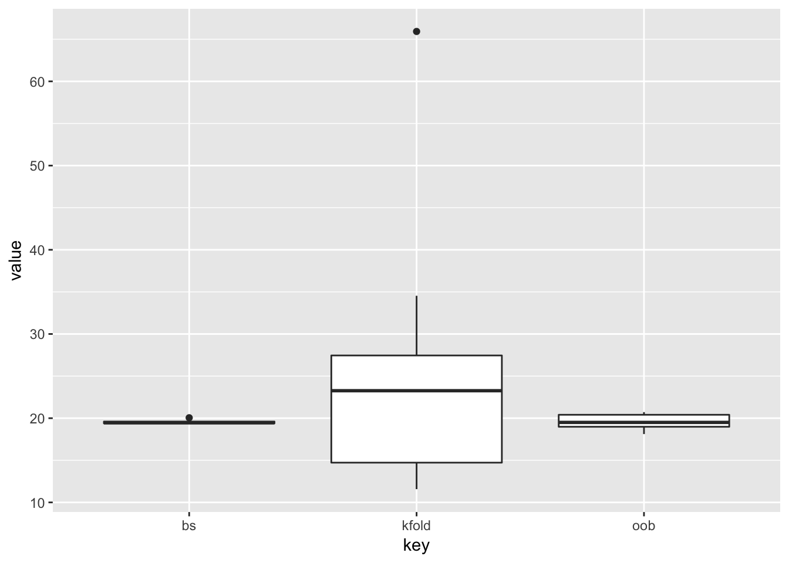

Chapter 3 Non-parametric Density Estimation
3.1 The Histogramm
The simplest density estimator is the histogram. The drawback is that we need to specify two parameters. The origin \(x_0\) and the bandwidth \(h\). At least the former is highly arbitrary and both affect the resulting histogram remarkably.
data_frame(x = rnorm(1000)) %>%
ggplot(aes(x = x)) +
geom_histogram(bins = 30, center = 0) # center is what we called x_0
3.2 Kernels
3.2.1 The naive Estimator
We can compute the relative frequency of observations falling into some region and use these frequencies as estimators for the probabilities.
Let’s consider some example data distributed uniformly at random between \(-0.5\) and \(+0.5\). Let us try to estimate the densities via the relative frequencies. We consider three points in x: \(-0.5, 0\) and \(+0.5\). We set \(h\) to 1/2 for now. For x equal zero, we know that all points are comprised in the range, so the relative frequency is one, for the two other x values, it is a half each. We can interpolate and then the a triangle.
x <- runif(10000, min = -1/2, max = 1/2)
dens <- density(x, kernel = "rectangular", bw = 1/2)
eval_one <- function(e_eval_one, x, h) {
1/(2*h)* mean(e_eval_one + h > x & e_eval_one - h < x)
}
naive_density <- function(x, h, x_eval) {
data_frame(
x_eval = x_eval,
y_est = map_dbl(x_eval, eval_one, x = x, h = h),
h = h
)
}
one_est <- naive_density(x, 1/2, seq(-1, 1, length.out = 3))
ggplot(one_est, aes(x = x_eval, y = y_est)) + geom_path()We don’t need to normalize anything since the area has size one already, which we need for it to be a density. However, if we use a larger \(h\), for example \(h = 1\), we need to divide by \(2\) to get an area of size one since at all three points, the relative frequency is one and it becomes zero only when the absolute value of x is larger than 3/2. Hence, we found the formula to obtain densities. \[ f(x) = \frac{1}{2h}\mathbb{P}[x-h< X < x+h] \;\;\; \text{for}\;\; h \rightarrow 0\] Which translates into frequencies for our estimator \[ \hat{f}(x) = \frac{1}{2hn}\#(X_i \in [x-h, x+h))\] This is quite wrong, as we know the true distribution is uniform between minus one and one. However, as you can see by playing around with the shiny app further down the page, it seems that with \(h \rightarrow \infty\), we are approaching the true distribution. The nice thing about this estimator is that there is no need to set the tuning parameter \(x_0\) anymore.
You can represent the naive kernel differently, namely as a kernel. We have \[ \begin{split} f(x) = & \frac{1}{2nh}\#\{X_i \in [x- d, x+ d)\} \\ = & \frac{1}{2nh} \sum\limits_{i = 1}^n 1_{[x_i \in [x- d, x+ d)]} \\ = & \frac{1}{2nh} \sum\limits_{i = 1}^n 1_{[(x_i - x)/h \in [-1, 1)]} \\ = & \frac{1}{2nh} \sum\limits_{i = 1}^n 1_{[(x - x_i)/h \in [-1, 1)]} | \text{You can flip signs} \\ = & \frac{1}{2nh} \sum\limits_{i = 1}^n w'\big(\frac{x -x_i}{h}\big) \\ \end{split} \]
\[ w'\big(\frac{x - x_i}{h}\big) = \begin{cases} 1 \;\;\ \text{if} \;\;\ | \frac{x - x_i}{h} | > 1 \\ 0 \;\;\ \text{else}. \end{cases} \] Where we can collapse \(2\) and our weight function \(w'(x)\), so we end up with the following.
\[ \begin{split} f(x) = & \frac{1}{nh} \sum\limits_{i = 1}^n w\big(\frac{x - x_i}{h}\big) \\ \end{split} \]
\[ w\big(\frac{x - x_i}{h}\big) = \begin{cases} \frac{1}{2} \;\;\ \text{if} \;\;\ | \frac{x - x_i}{h} | > 1 \\ 0 \;\;\ \text{else}. \end{cases} \]
3.2.2 Other Kernels
The function \(w\) from above is an example of a kernel function since it satisfies the condition of a kernel, which are
- integrates to one, \(\int\limits_{-\infty}^\infty K(X)dx = 1\)
- is symmetric, \(K(x) = K(-X)\)
- is strictly positive, \(K(X)\geqslant 0\)
\(w(\cdot)\) is the rectangular kernel, which becomes obvious when plotting it.
rectangular <- function(x) {
if_else(abs(x) < 1/2, 1, 0)
}
normal <- function(x) {
(2*pi)^(-1/2)*exp(-x^2/2)
}
cosine <- function(x) {
if_else(abs(x) < 1, pi / 4 * cos(pi / 2 * x), 0)
}
ggplot(data_frame(x = 0), aes(x = x)) +
stat_function(fun = rectangular, aes(color = "rectangular")) +
stat_function(fun = normal, aes(color = "normal")) +
stat_function(fun = cosine, aes(color = "cosine")) +
scale_x_continuous(limits = c(-2, 2))
It is piece-wise constant, since every point is either in or out of the interval. The density estimate is not smooth since the kernel is not smooth. \(\hat{f}(x)\) inherits also other properties from the kernel, e.g. it is strictly positive if the kernel is strictly positive and it integrates to one if the kernel does so. Therefore, to obtain a smooth density estimate, we need to choose a smooth kernel. The Gaussian kernel seems to be a natural choice. Instead of giving an observation a weight of either one or zero, values in between are also possible, depending on the distance of the point relative to the point for which we want to obtain a density estimate and depending on \(h\). Some kernels such as the normal kernel have the drawback that they their weights are never getting to zero, which implies computational cost at limited gain. We can instead choose a kernel like the cosine kernel, which also smooth but reaches zero relatively quickly, which speeds up calculations.
3.3 The Bandwidth
More important than the kernel is the bandwidth. A small bandwidth yields a very wiggly function (since only the points in the very close neighborhood are given a significant weight), a large bandwidth will produce a function that is varying slowly as a function of x. The bandwidth is closely related to the bias-variance trade-off.
A large bandwidth means a large bias and a low variance, a small bandwidth the opposite.
For the extreme cases of h, we have:
- For a very large bandwidth, the curve estimate becomes the kernel.
- For a very small bandwidth, the deity takes the shape of many small kernels. Around each point, a kernel with density \(1/n\) forms. Hence, they integrate to one. Points may be close to each other, so the mini kernels overlap.
We can also use locally varying bandwidths. In regions where data is sparse we want to use larger bandwidths. A simple approach is to use the k nearest neighbour of each x as the local bandwidth for each x. Note that with such bandwidths the density will not necessarily integrate to one anymore.
We can decompose the mean squared error of an estimator evaluated at a point x similar to the one of a random variable (since the estimator is derived from realizations of random variables).
\[\begin{equation} \begin{split} Var(\hat{f(x)}) & = Var(\hat{f(x)} - f(x)) \\ & = \mathbb{E}[(\hat{f(x)} - f(x))^2] - \mathbb{E}[(\hat{f(x)} - f(x))]^2 \\ & = \text{MSE(f(x))} - \text{bias}^2 \\ \text{MSE(f(x))} & = \text{bias}^2 + Var(\hat{f(x)}) \\ \end{split} \end{equation}\]Instead of minimizing the mean squared error at one point, we minimize the integrated mean square error over the support of x.
\[ \text{IMSE}(x) = \int \text{MSE}(x)dx\]
3.4 Bringing it all together
Here is a shiny app that lets you try different parameters.
3.5 Other Density Estimators
In regions where data is sparse, your estimate will typically be close to zero, but it cannot become negative. This constraint is a bit nasty. If you take logs, you no longer have such constraints. The constraint is just that the exp of your estimate has to integrate to one. So you estimate the log of \(f\) and exponentiate to get \(f\).
3.6 Higher Dimensions
Very similar to one-dimensional density estimation, you can estimate densities of multi-dimensional data. The main difference is that the kernel is now multivariate.
\[ \hat{f}(\mathbf{x}) = \frac{1}{nh^d}\sum\limits_{j = 1}^n K\Big(\frac{\mathbf{x}- \mathbf{X_i}}{h}\Big)\]
A simple multivariate kernel is the product of uni-variate kernels. \[K(\mathbf{u}) = \prod\limits_{j = 1}^dK_{univ}(u_j)\]
If in addition, the kernel should be radially symmetric (which means a function that is constant in circles around the origin, which also means that the the value the kernel takes only depends on the distance to the origin), it can be shown that the only kernel that meets this two conditions, i.e. that is
- is a product kernel
- is radially symmetric
is the Gaussian kernel \(K(\mathbf{u}) = ce^{-\frac{1}{2}u_1^2} * ce^{-\frac{1}{2}u_2^2} ... = ce^{-\frac{1}{2}\mathbf{u}'\mathbf{u}} = ce^{-\frac{1}{2}\|u\|^2}\)
3.6.1 The Curse of Dimensionality
The curse of dimensionality is the phenomena that data becomes sparse if the number of dimensions increase. That means that for every other dimension we add, we must add over-proportionally many data points to keep the distance between the data points at a reasonable (low) level.